AI analysis · Based on Claude self-analysis and deep research
Version 5: what three real users told us, and what it changes in v4
The first three real user interviews (Ishmeet, Olivia and Bryan) were compared with Claude's earlier simulated research. Where the real people disagreed with the simulation, the real people win. The result is a proposed version 5, built on top of today's production (v4) and ready to try on staging. Production stays on v4 until you approve.
Production now: design v4, commit c58a67aProposal: design v5, on staging only (switch in the bar at the top)Based on: 3 user interviews, the retention simulation (25 Oct), the owner report (27 Oct)Analysis and build: Claude (Anthropic's AI), for Werner and Eugene
Invented numbers a new user sees (scores, percentages, rankings)5 screens0Measured Progress, player, analysis, cards, challenge
Suggested changes that say why they are suggested0AllMeasured in the "Change this session" list
New users still active after 7 days8.1%11.4%Predicted v4 recalibrated → v5; range 9.6–13.6%
New users still active after 30 days3.9%6.9%Predicted range 5.2–9.3%
In one paragraph. The real users agreed with most of the simulation: they want to type little and let Aurelia decide, they want one simple list, and they do not trust numbers they cannot explain. But they also corrected it in three places. Scores make some people anxious rather than motivated. Wearables are wanted, not feared, as long as Aurelia asks first. And nobody wants to compete: all three rejected leaderboards. Version 5 answers each point. Progress is told in words from the user's own check-ins, every suggestion has a "Why?", Aurelia plans the next chapter itself, the wearable is asked for during onboarding, there is an optional journal, and the community is about stories rather than rankings. Claude's model predicts this lifts the 7-day return rate from about 8% to about 11%, into the middle of the usual range for wellness apps. That is still a forecast.
1. What the three users said
IshmeetNumbers about how they feel would make them anxious, not motivated. Wants to give very little input and let the app work it out. The "#" in front of tags looks out of place.
OliviaThe sample figures looked unserious. Would rather get a report every few weeks than live numbers. Wants to know why a change is suggested, cares about voice quality, read the landing "space" and the map as a co-working space, prefers stories to competitions, and would share only if it is clear what others can see.
BryanAsked how the numbers were calculated. Wants the detail available on demand, liked the single list with toggles, would keep a journal, and is interested in friends and local groups rather than strangers on a leaderboard.
All three already wear a watch or ring and expected Aurelia to use it, with their consent. They most likely tested an earlier build (v2): they mention the sample "7% REM sleep" conversation, which v4 already removed. Their points about invented numbers still apply to v4, which shows them on Progress, the player, session cards and the challenge.
2. Simulation compared with the real users
Claude's earlier research used six simulated users. This is where the real interviews confirmed it, corrected it, or found something it had missed.
Topic
Simulation said
Real users said
Result
Invented numbers
Erode trust
"Unserious"; "how is this calculated?"
Confirmed
Little input, Aurelia decides
Fewer questions keep people
Ishmeet and Olivia: yes
Confirmed
One list of changes
Simpler is better
Bryan liked the toggles
Confirmed
Progress scores
Motivate people to return
Anxiety for one; a report every few weeks for another; detail on demand for the third
Corrected
Wearables
A privacy risk; keep off
All three wear one and want it used, if asked
Corrected
Why a change is suggested
Not tested
Olivia and Bryan asked for it
Missed
Challenges and rankings
Social proof helps
Rejected by all three; stories, friends, local groups instead
Missed
Landing page
Not tested
"Space" and the map read as co-working
Missed
Journal, voice, sharing privacy
Not tested
Each raised by at least one user
Missed
Three interviews are a small sample. They are enough to correct a simulation, not to prove a result. The model was recalibrated accordingly: the weight given to progress scores was halved, and wearable consent became a reason to return instead of a reason to leave.
3. v4 today, the suggestion, and v5
Eight changes, each with today's production screen (v4) and the same screen in v5 on staging.
V1 · Progress in words, not scores
v4 todayProgress shows sample cards: "60%, Great Progress!" and "24%, Needs Improvement". They are not the user's results.
SuggestionUse only the user's own check-ins, say it in plain words, report every two weeks, and keep the detail one tap away.
v5"After one chapter you felt pleasant." Next report on a set date, "See what's behind this" lists each check-in and what it is based on. On staging
v4 today
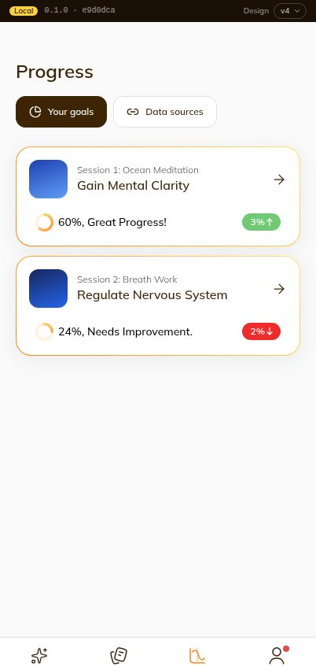
v5
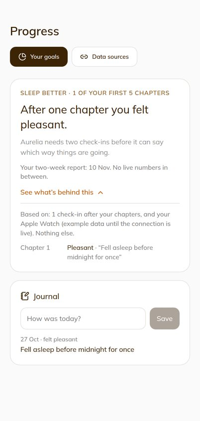
V1 · No analytics on the player
v4 todayOpening a catalogue session shows "Great Progress! +3% since yesterday" and a chart of three chapters the user never played.
SuggestionThe player plays. Progress lives in one place.
v5The player shows the session only. The old analysis pages send people to Progress. On staging
v4 today
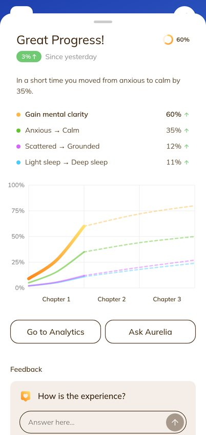
v5
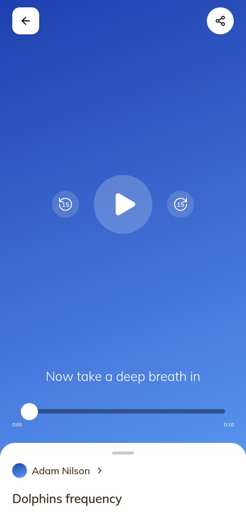
V2 · A "Why?" on every suggestion
v4 todaySuggested changes come with a percentage ("+12% expected") and no reason.
SuggestionSay what the change does and what it is based on, in one tap.
v5"Why?" opens: what it does, and "Based on: your goal, your words and how you felt after your last chapter". Untested ideas say so. On staging
v4 today
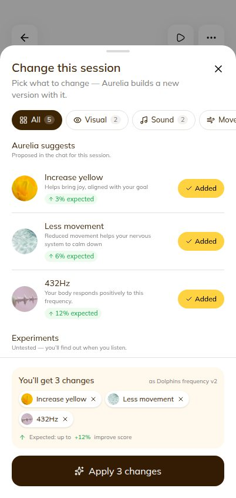
v5
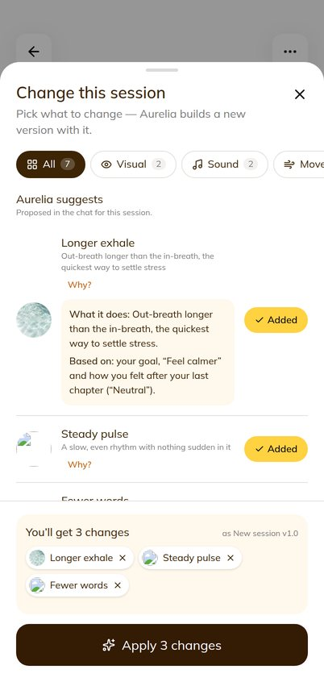
V3 and V5 · Aurelia plans the next chapter; an optional journal
v4 todayAfter the check-in: "Chapter 2 is ready tomorrow night" and a reminder. Nothing says what will change.
SuggestionSay what Aurelia will do with the answer, and let the user add a line in their own words.
v5"Chapter 2 keeps what worked and goes a little deeper." A wearable reading (example data) and a one-line journal note, private to the user. On staging
v4 today
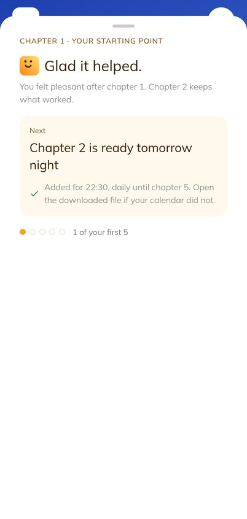
v5
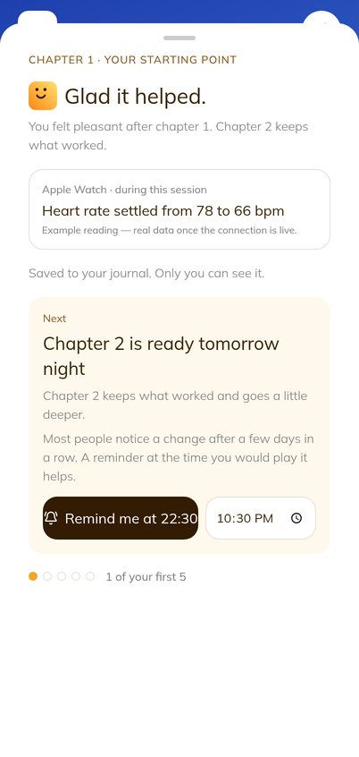
V4 · The wearable, asked for properly
v4 todayOnboarding ends with "Connect a wearable later in My Wellness". Data sources start all off.
SuggestionAsk once, during onboarding, and say exactly what would be read.
v5"Do you wear one of these?" Apple Watch, Whoop, Oura Ring or Not now. Only the chosen one is switched on in Data sources. On staging, sample data
v4 today
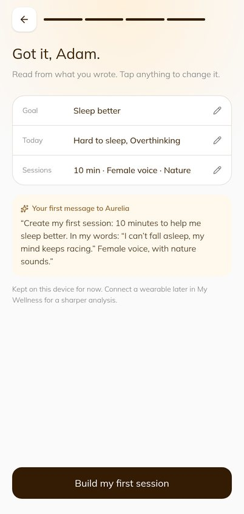
v5
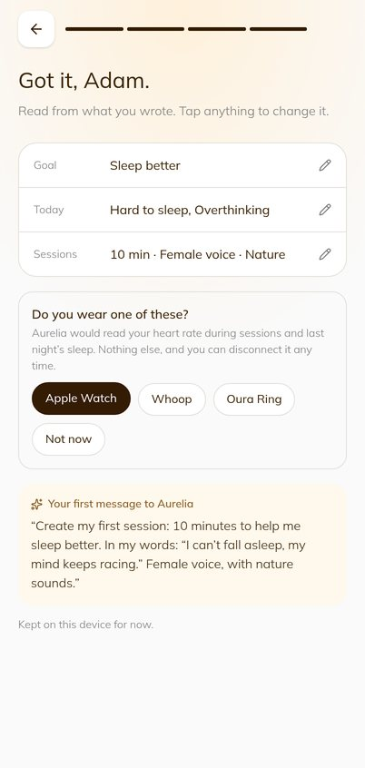
V6 · A shared journey, not a contest
v4 todayThe challenge shows a podium and a ranked list with play counts.
SuggestionShow who joined and what they made, without ranks.
v5"Made for this journey": the sessions people shared, no rank, plays or trend. Publishing says what others can see and what stays private. On staging
v4 today
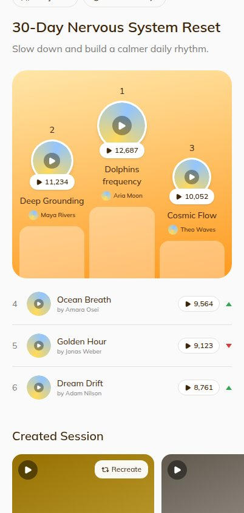
v5
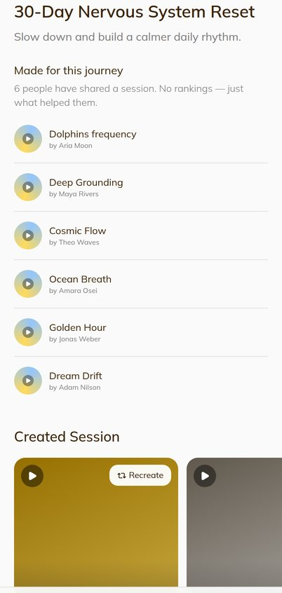
V6 · Cards that describe the session
v4 todayCommunity cards carry claims such as "This helped Adam reduce stress by 43% in less that a week", and tags with "#".
SuggestionDescribe what the session is like. Drop the "#".
v5"A slow descent built around cetacean song…" in place of the claim; plain tags. On staging
v4 today
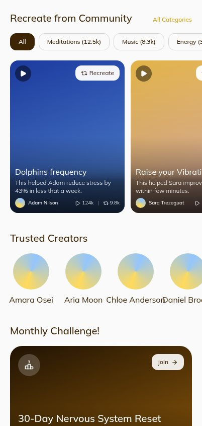
v5
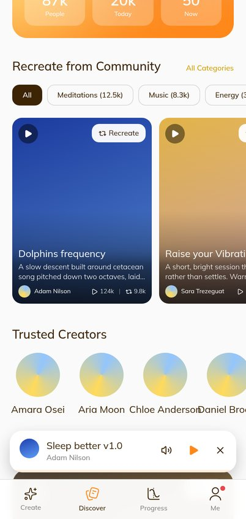
V7 · A landing page that says what Aurelia is
v4 today"Create the space you imagine", followed by a world map of live sessions. Olivia read it as a co-working space.
SuggestionSay it plainly and drop the map for visitors.
v5"Sessions made for how you feel today." The map is gone for visitors. On staging
v4 today
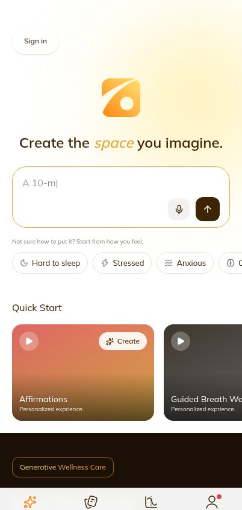
v5
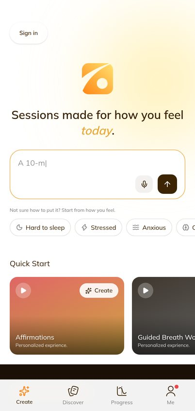
4. Expected impact
Expected retention Predicted
Share of all new users who come back and listen or create on day 1, 7 and 30. v4 is shown after recalibration with the interviews. The thin line on v5 is the forecast range. The shaded band is the usual range for health and wellness apps.
Before the work (v1)Production now (v4)Proposal (v5)
Which change does the most Predicted
The gain in percentage points if each change were added to v4 on its own. Changes overlap, so the rows do not add up to the total.
Change
Day 1
Day 7
Day 30
Why it helps
V4 Wearable asked for up front
+0.8
+0.6
+0.5
Real users wanted it; it makes the next chapter feel personal.
V1 Progress in words, report every two weeks
+0.3
+0.6
+0.6
Removes the anxiety and the distrust; the report is a reason to return.
V2 A "Why?" on every suggestion
+0.9
+0.5
+0.2
Trust at the first build, when most people decide.
V3 Aurelia plans the next chapter
+0.4
+0.4
+0.3
Nothing to tune; the check-in visibly matters.
V5 Journal
+0.2
+0.3
+0.3
A small daily habit for those who want one.
V7 Clear landing for visitors
+0.4
+0.2
+0.1
Fewer visitors leave confused on the first screen.
V6 Community of stories, no contest
0
+0.1
+0.1
Small for retention; it mainly removes a reason to dislike the app.
How to read this. v4 sits at the lower edge of the usual range. v5 should bring day 7 and day 30 into the middle of it. The biggest effects come from honesty (no invented numbers, a reason for every suggestion) and from using the wearable people already own.
These are forecasts from a model calibrated on simulated users and three interviews, not a measurement. The wearable effect assumes real wearable data, which needs the backend; on staging the reading is an example.
5. Proposed but not built yet
Item
Raised by
Why not in v5 yet
Status
Real wearable connection (Apple Health, Whoop, Oura)
All three
Needs the backend and each vendor's sign-in. v5 shows where it goes, with example data.
Needs backend
Choice of voice, with previews
Olivia
Needs recorded or generated voices to choose from.
Needs assets
Friends and local groups, meeting in person
Bryan
Needs accounts, invitations and moderation.
Needs backend
A reason to share (a reward or a thank-you)
Olivia
A product decision on what the reward is.
Decision needed
The two-week report sent as a message
Olivia
Needs push or email. v5 shows the date on Progress.
Needs backend
Staying signed in, so journal and check-ins follow the person
Owner report
Everything is kept on the device for now.
Decision needed
Remaining simplification (S2–S7)
Simplification plan
Waiting on feedback.
Waiting
6. Decisions needed from you
1. Try v5 on staging, then promote it?Switch to "Version 5" in the bar at the top of staging. Production stays on v4 until you say so.
2. Show v5 to the same three users?A 20-minute follow-up with Ishmeet, Olivia and Bryan is the quickest check that the corrections land.
3. Start the backend work for wearables?The largest single effect in the model, and the one thing v5 can only show with example data.
4. Keep users signed in?Still needed before any real retention number, and now also so the journal is not lost.
AI analysis by Claude, based on its own analysis of the app, three real user interviews and deep research. In the repository: retention simulation (docs/reviews/Aurelia-Retention-Simulation-2026-10-25.pdf), owner report (docs/reviews/Aurelia-Owner-Report-2026-10-27.pdf), update log entry U053, work journal J049.